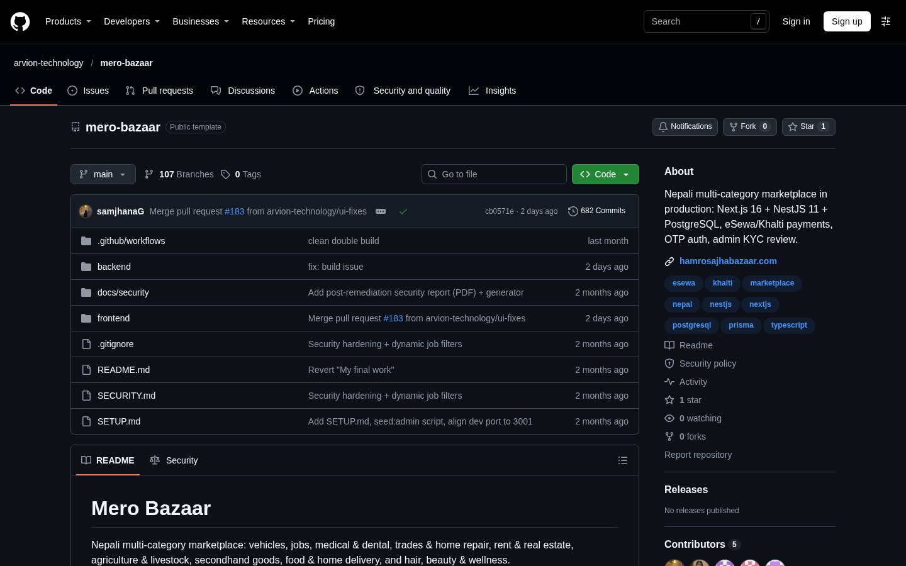

Mero Bazaar
The marketplace platform we maintain, published as a public repository: a Next.js front end over a NestJS API and PostgreSQL, with admin KYC review, payments, listings and seller tools. 935 tracked files, 43 controllers and 70 backend spec files.

Classifieds with no trust layer.
A national marketplace has to carry many listing shapes at once, goods, vehicles, jobs, rentals, services, food, while keeping one identity, one payment path and one moderation queue. The naive build becomes a different app per category, and every new category re-implements verification.
The platform also has to survive the operational reality of the market: sellers who are not who they claim, payments that arrive asynchronously, and an admin team that needs to review KYC and listings without touching the database.
One platform, many listing shapes.
- NestJS API with 34 feature modules and 43 controllers, Prisma over PostgreSQL with 58 migrations, categories, listings, users, seller profiles, orders, payments, reports, search and admin review.
- Next.js front end with 112 pages and 96 BFF route handlers: buyer flows, seller dashboard, KYC upload, checkout, orders, and a 14-page admin console for KYC, listings, payments, reports and flags.
- JWT auth with server-side sessions, NextAuth for OAuth, bcrypt, OTP and reset-token hashing, and step-up reauthentication on sensitive account actions.
- eSewa and Khalti callbacks with server-to-server verification before an order is marked paid; reservations are quota-limited and transitions are transactional.
- Listing publication gated on admin-approved KYC; uploaded media content-validated by magic bytes and re-encoded, with KYC documents outside the public mount.
How it is put together
Next.js 16 front end (app router, 112 pages)
└─ BFF route handlers (96) ── HTTP ──► NestJS 11 API
├── 34 modules / 43 controllers
├── Prisma ── PostgreSQL (58 migrations)
├── payments: eSewa / Khalti callbacks
├── SMS + OTP, KYC document store
└── admin review + moderation queues
CI: lockfile install, lint, build, tests, image publish (cosign)
Stack
Security and money
- Registration can only assign USER/VENDOR; privileged roles are admin-granted after review.
- Payment state changes only after a server-to-server verification with the provider.
- Session-bound JWTs, hashed OTP/reset tokens, session revocation on credential changes.
- Content-validated uploads and authenticated-only access to KYC documents.
Product surfaces

Building something in this category?
We can walk you through the architecture, the payment integration and the failure cases on a call, including the parts that were hard.